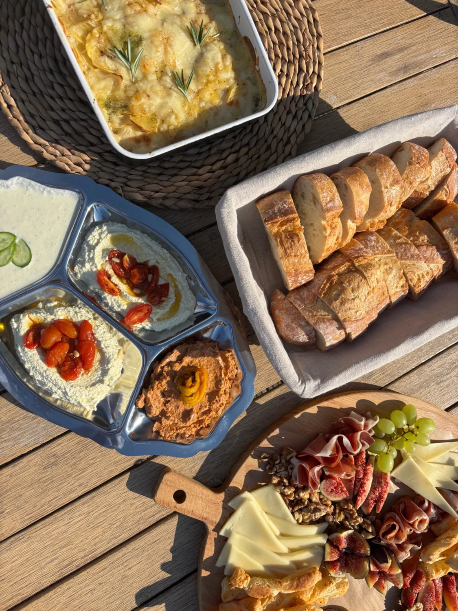
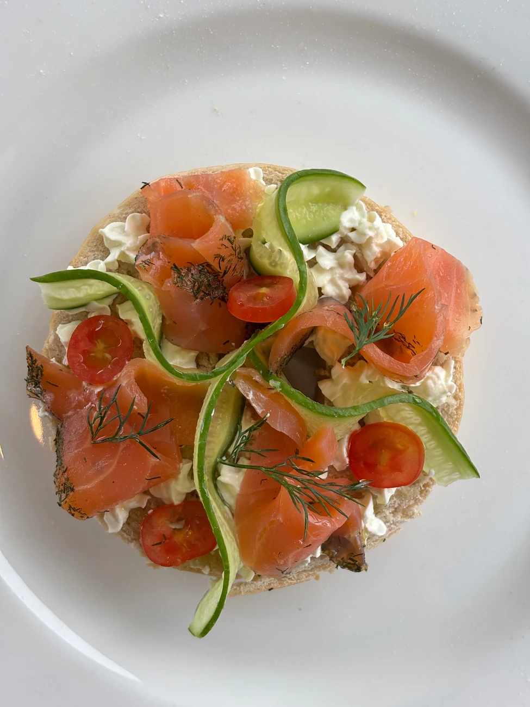

Grazing box

01 / BORRELEN & DELENEen goedgevulde borrelbox met kaas, charcuterie, dips, brood en verse extra’s. Klaar om op tafel te zetten.
€75 voor 6 personen
Bekijk menu & detailsCATERING · 3 MANIEREN OM TE DELEN

01 / BORRELEN & DELENEen goedgevulde borrelbox met kaas, charcuterie, dips, brood en verse extra’s. Klaar om op tafel te zetten.
€75 voor 6 personen
Bekijk menu & details
02 / ZOET & HARTIGBelegde broodjes, frisse salades en iets zoets. Of maak er een brunch van met croissants, yoghurt en fruit.
Lunch €17,50 · Brunch €22,50 p.p.
Bekijk menu & details 03 / KOUD, WARM OF ALLEBEI
03 / KOUD, WARM OF ALLEBEIKleurrijke schalen om te delen, warme gerechten of een combinatie. We stellen één passend menu samen voor jouw gezelschap.
Prijs op aanvraag
Bekijk menu & detailsEen idee of al concrete plannen? Vertel het me. Je krijgt binnen 48 uur een persoonlijk antwoord.